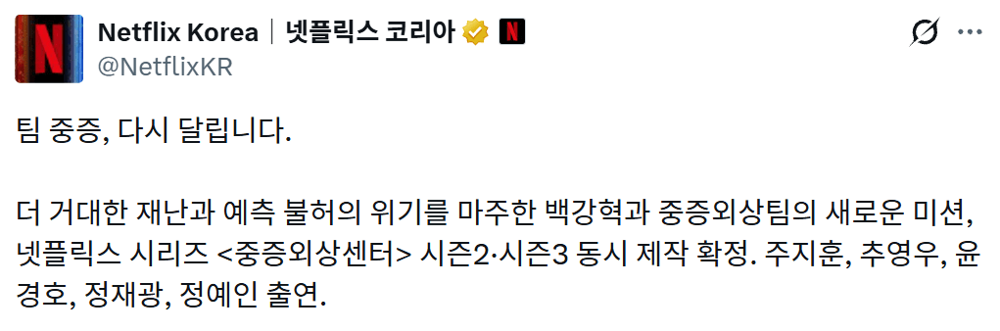

그 배우는 정예인으로 교체

그 배우는 정예인으로 교체
생각보다 연기력이 필요한 배역인데..
하영이 연기는 잘 하긴 했지
솔직히 그 배우 만큼은 못할듯 ㅋㅋ 시즌1에서 잘하긴 했는데
한산이가 작가 얼마 받았으려나
작가는 돈 거의 못받아 대신 책이 팔리지
넷플릭스는 꽤 준다고 했던거 같은데 잘못기억하나
물론 일반적인 기준에선 작은 돈은 아닌데, 흥행 성적에 비해서는 작음.
배역은 그대로 가기로 했고 오디션 봤던 역할들 중 가장 잘해서 캐스팅 했다고 하는데 독이 든 성배일지 아닐지 궁금하네 차피 나오면 내년 가을에야 나올듯
러블리즈?
나는 시즌2 , 3이 말장난 에피소드 절반 쪼개기가 아니었으면 좋겠음 너무 재밌게 본 드라마라 정주행만 3번함 많은편 나오면 좋겠다
시즌 1에서도 딱히 간호사가 연기 잘했다는 느낌은 없었고 그냥 조연급이라서 바꿔도 별 영향 없을듯
아이고, 하영은 대박 작품 날렸네
다른 건 모르겠고 원래 판타지 느낌이 있는 작품이니까 그런데 정예인이 변수네....
비중 높은 역할인데 정예인이 얼마나 좋은 연기를 해줄지?
와 잠깐봤는데 신규진하고 말을 안하네ㅋㅋㅋ 편집이 왜이렇게 된거지